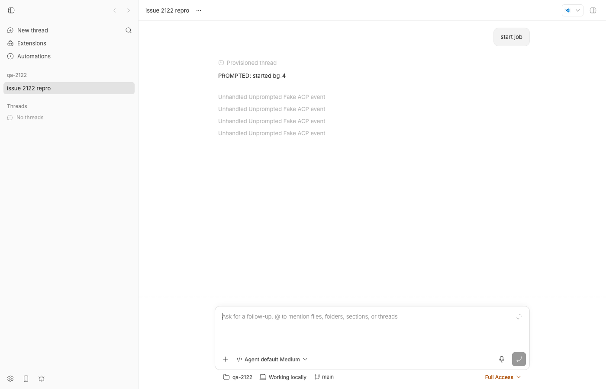
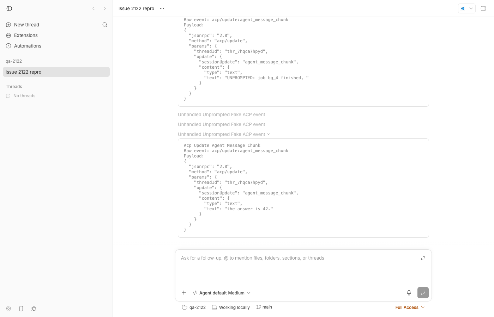
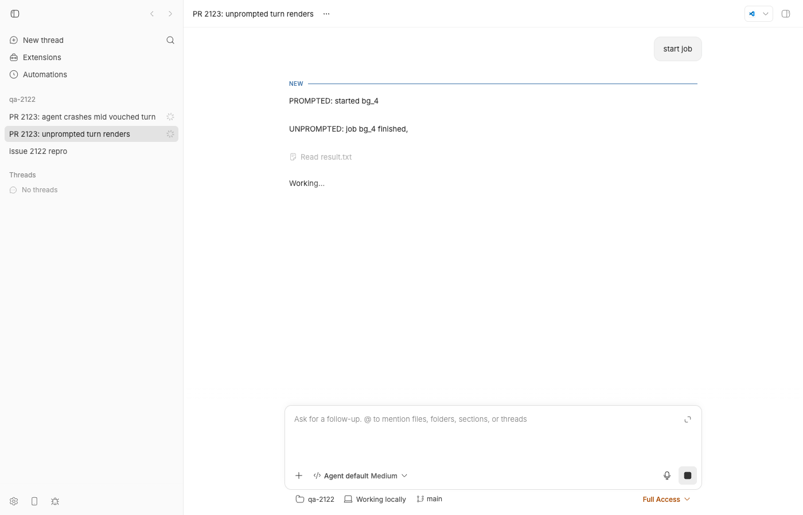
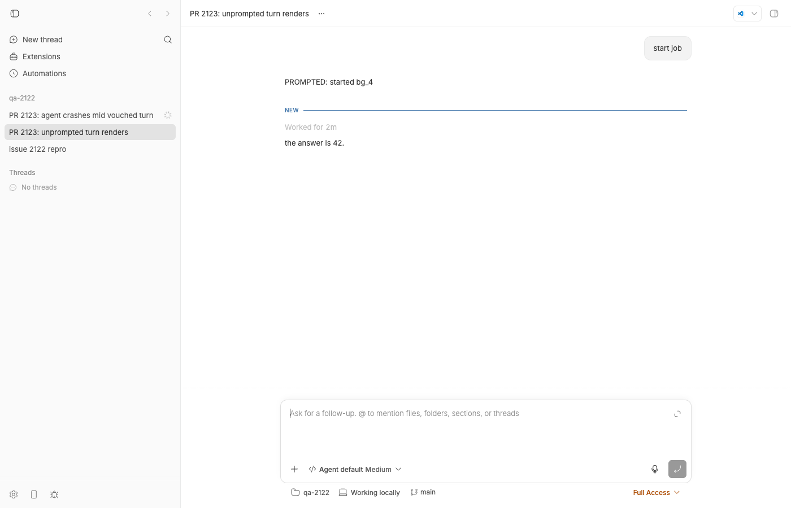
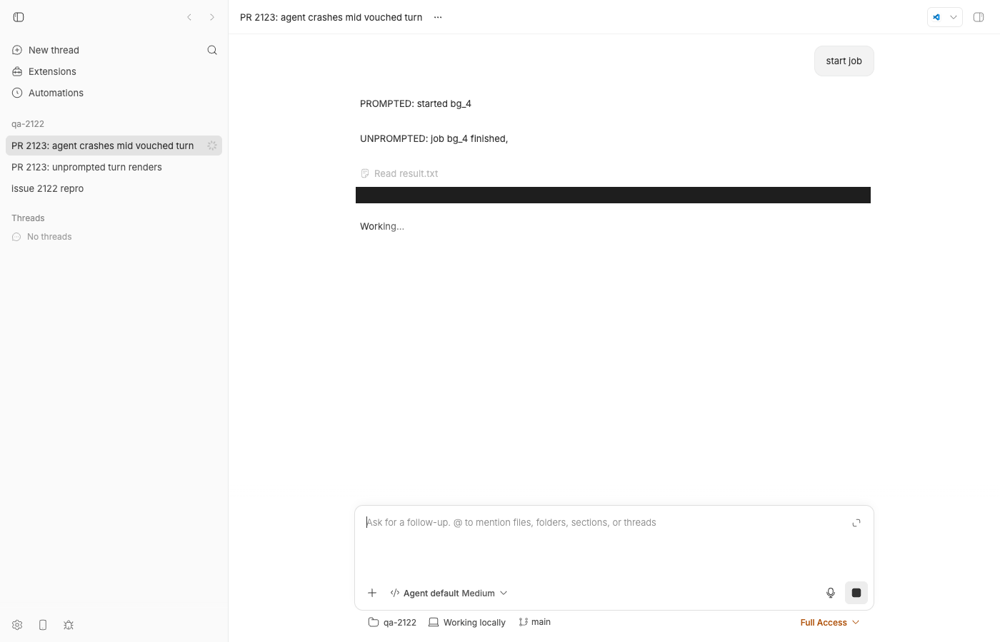

#2122 · provider-acp silently drops agent-initiated turns (unprompted session updates, e.g. OMP async-job delivery)
Verdict: REPRODUCED · Root-cause confidence: high
Linked PR: #2123 — verdict REQUEST CHANGES (fixes the drop, but a vouched turn is left open forever when the agent process exits, permission requests inside a vouched turn are auto-cancelled, and the 120 s quiet window hides the last message and shows "Working…" for two minutes).
1. TL;DR
When an ACP agent (the concrete case is OMP's async-job auto-delivery) streams text or tool calls without bb having sent it a session/prompt, the ACP bridge forwards those updates to the runtime but never opens a turn for them. The runtime's delta assembler, by design, refuses to let item/stream deltas open a turn, so each unprompted chunk is demoted to a thread-scoped provider/unhandled raw-event row. Those rows are persisted but hidden from the timeline unless the showUnhandledProviderEvents setting is on (it defaults to off; dev builds force it on), so the user sees a thread that simply never answered. I reproduced this end to end on fcada5a3b with a ~100-line fake ACP agent, both as a failing vitest against the real bridge + assembler and live in a dev instance (DB rows and screenshots below). The issue's mechanism is essentially right; one detail is wrong: the events are not "zero persisted", they are persisted as provider/unhandled and hidden. PR #2123 makes the bridge open a vouched turn for idle work updates and closes it after 120 s of silence; it fixes the drop but introduces a hung-thread failure mode and leaves permission requests broken inside such turns.
2. Claims vs findings
| Claim from the issue | Status | Evidence |
|---|---|---|
Unprompted session/update work (message chunks, tool calls) with no prompt in flight never reaches the thread as a turn/message. | Verified | Repro test on main: assembled events after the prompted turn are four provider/unhandled (thread scope), zero turn/started, zero agent-message items (§4, vitest-main.log). Live DB rows seq 14–17 (§4). |
| "Zero persisted events between those timestamps — no turn, no items, no error." | Refuted (on fcada5a3b) | Each chunk IS persisted, as a thread-scoped provider/unhandled row (events-table-main.txt seq 14–17). They are hidden from the timeline in production because includeProviderUnhandledOperations = isDevelopment || settings.showUnhandledProviderEvents (apps/server/src/routes/threads/data.ts#L340-L342) and the setting defaults to false. Net user-visible effect is the same: nothing renders. The reporter's 0.39.0 DB query may have filtered on turn-scoped rows; I could not inspect it. |
handleAgentNotification forwards session/update with no turn bracketing when no prompt is in flight. | Verified | plugins/provider-acp/src/bridge/bridge.ts#L2170-L2214: the only gates are stopping, loading and session-id match; it never consults activePromptKind. |
noTurnFallbackFor "classifies those updates unhandled with onlyIfNoTurn: true". | Partly wrong | The translator emits real item.textDelta/item.open/item.close deltas carrying a noTurnFallback payload (plugins/provider-acp/src/delta-translation.ts#L448-L466). It is the assembler that, finding no open turn, pushes the fallback as provider/unhandled (packages/provider-bridge-protocol/src/assembler/delta-assembler.ts#L1843-L1856, packages/provider-bridge-protocol/src/assembler/delta-assembler.ts#L1334-L1354). onlyIfNoTurn is only used for empty-translation updates. Same outcome, different layer. |
user_message_chunk is classified as noise and swallowed. | Verified | plugins/provider-acp/src/visibility.ts#L36-L44 lists it in NOISE_ACP_UPDATE_KINDS; in the repro it produced no delta at all (delta kinds on the wire in §4). |
OMP 17.4.0 over omp acp emits user_message_chunk + agent_message_chunks after session/prompt returned. | Unverified | I did not drive a real OMP async job (costs usage; this machine has omp 16.3.10). The fake agent reproduces exactly that wire shape; any ACP agent emitting idle work updates hits the same path. |
| Updates arriving while a prompt is in flight render fine; only the no-prompt window drops. | Verified | The prompted chunk PROMPTED: started bg_4 rendered as an agent message in the same thread (seq 10–12). |
Protocol rule 3 permits a bridge-emitted turn.open for turns the user did not initiate; compaction already does this. | Verified | docs/provider-bridge-protocol.md "Turn lifecycle" rule 3; startCompaction emits ACP_COMPACTION_STARTED_METHOD which the translator turns into a turn. |
| "the claude-code translator auto-opens turns on streamed text". | Verified | plugins/provider-claude-code/src/delta-translation.ts pushes { kind: "turn.open" } before stream text deltas (lines ~1056, ~1070). |
| Not a permission stall / not provider reaping / not the DB write path. | Consistent | Repro runs in full permission mode with no permission requests; the agent process stays alive; prompted deltas persist in the same thread. |
3. Environment
- bb
fcada5a3b(main, 2026-08-21), app version 0.39.0, macOS 26.5.2 (Darwin 25.5.0) arm64, Node v22.23.1. - Dev instance from this worktree: App
http://localhost:15768, Serverhttp://localhost:23768, Host daemon127.0.0.1:31768, data dir~/.bb-dev/bb-machines-HOST.getbb.app-checkouts-bb-.claude-worktrees-wf_21e66a79-f02-4-66591f607d02(deleted at cleanup). - Provider: a custom ACP agent registered through
customAcpAgentsin the dev data dir'sconfig.json, pointing atissue-2122-unprompted-agent.mjs(a ~100-line scripted ACP agent). No real OMP session was run;omp16.3.10 is on this machine, the issue reports 17.4.0. - PR #2123 was evaluated after rebasing its single commit onto
fcada5a3b(its basec9aef7514is 39 commits behind; one trivial import conflict inbridge.test.tsbecause the testing helpers moved to@get-bb/plugin-sdk/provider-bridge/testing).
4. Minimal reproduction
4a. Unit level (fails on main, passes on PR #2123)
- Copy
issue-2122-unprompted-agent.mjsandissue-2122.repro.test.tsintoplugins/provider-acp/src/bridge/. The agent answersinitialize/session/new/session/prompt, returnsend_turn, then 150 ms later emits an unsoliciteduser_message_chunk,agent_message_chunk,tool_call,tool_call_update,agent_message_chunk. - Run it from the repo root:
pnpm --dir plugins/provider-acp exec vitest run src/bridge/issue-2122.repro.test.ts
- Expected: two
turn/started, the unprompted text assembled as agent messages, noprovider/unhandled. Actual onfcada5a3b:delta kinds on the wire: session.reset turn.open input.accepted item.textClose item.textDelta item.textClose item.textClose turn.boundary item.textClose item.textDelta item.textClose item.textClose item.open item.close item.textClose item.textDelta assembled event types: turn/started turn/input/accepted item/started item/agentMessage/delta item/completed turn/completed provider/unhandled(acp/update:agent_message_chunk, {"kind":"thread"}) provider/unhandled(acp/update:tool_call, {"kind":"thread"}) provider/unhandled(acp/update:tool_call_update, {"kind":"thread"}) provider/unhandled(acp/update:agent_message_chunk, {"kind":"thread"}) agent message texts: ["PROMPTED: started bg_4"] AssertionError: expected [ { type: 'turn/started', ...(3) } ] to have a length of 2 but got 1 > src/bridge/issue-2122.repro.test.ts:190:58Note the wire: the bridge does emititem.textDelta/item.open/item.closefor the unprompted updates but no secondturn.open; the assembler converts each into a thread-scopedprovider/unhandled. Full log:vitest-main.log; assembled events:main-events.json.
4b. Live (dev instance on fcada5a3b)
scripts/bb-dev-app current, then add to<data dir>/config.json(paths adjusted) andcurl -X POST $BB_SERVER_URL/api/v1/system/config/reload:{ "customAcpAgents": [ { "id": "unprompted", "displayName": "Unprompted Fake ACP", "command": "/path/to/node", "args": ["/path/to/plugins/provider-acp/src/bridge/issue-2122-unprompted-agent.mjs"], "env": { "UNPROMPTED_DELAY_MS": "3000" } } ] }- Create a project on a scratch repo and spawn a thread:
pnpm bb:dev thread spawn --project proj_jws2kuv28t --provider acp-unprompted --permission-mode full \ --title "issue 2122 repro" --prompt "start job" --json # -> thr_7hqca7hpyd
- After ~10 s, query the events table. Expected: a second turn with the agent's follow-up. Actual: the follow-up is four thread-scoped
provider/unhandledrows (seq 14–17), no turn, no items:sequence type scope_kind turn_id created_at data -------- -------------------------- ---------- ------------- ------------- ------------------------------------------------------------------------------------------------------------------------------------------------------ 1 client/turn/requested thread 1787325358181 {"direction":"outbound","source":"spawn","initiator":"user","request":{"method":"thread/start","params":{}},"requestId":"creq_p73kv5cv2r","senderThrea 2 client/thread/start thread 1787325358182 {"direction":"outbound","source":"spawn","initiator":"user","request":{"method":"thread/start","params":{}}} 3 system/thread-provisioning thread 1787325358184 {"provisioningId":"tpv_evswrstn3c","status":"active","environmentId":"env_bpmzefv6u7","entries":[{"type":"step","key":"workspace-started","text":"Prep 4 system/thread-provisioning thread 1787325358274 {"provisioningId":"tpv_evswrstn3c","status":"active","environmentId":"env_bpmzefv6u7","entries":[{"type":"step","key":"workspace-path","text":"Using w 5 system/thread-provisioning thread 1787325358279 {"provisioningId":"tpv_evswrstn3c","status":"active","environmentId":"env_bpmzefv6u7","entries":[]} 6 system/thread-provisioning thread 1787325358297 {"provisioningId":"tpv_evswrstn3c","status":"completed","environmentId":"env_bpmzefv6u7","entries":[]} 7 thread/identity thread 1787325358556 {"providerThreadId":"unprompted-13245"} 8 turn/started turn da8fde3146-t1 1787325358556 {"providerThreadId":"unprompted-13245"} 9 turn/input/accepted turn da8fde3146-t1 1787325358556 {"providerThreadId":"unprompted-13245","clientRequestId":"creq_p73kv5cv2r"} 10 item/started turn da8fde3146-t1 1787325358561 {"providerThreadId":"unprompted-13245","item":{"type":"agentMessage","id":"da8fde3146-i1","text":""}} 11 item/agentMessage/delta turn da8fde3146-t1 1787325358561 {"providerThreadId":"unprompted-13245","itemId":"da8fde3146-i1","delta":"PROMPTED: started bg_4"} 12 item/completed turn da8fde3146-t1 1787325358561 {"providerThreadId":"unprompted-13245","item":{"type":"agentMessage","id":"da8fde3146-i1","text":"PROMPTED: started bg_4"}} 13 turn/completed turn da8fde3146-t1 1787325358561 {"providerThreadId":"unprompted-13245","status":"completed"} 14 provider/unhandled thread 1787325361666 {"providerThreadId":"unprompted-13245","providerId":"acp-unprompted","rawType":"acp/update:agent_message_chunk","rawEvent":{"jsonrpc":"2.0","method":" 15 provider/unhandled thread 1787325361666 {"providerThreadId":"unprompted-13245","providerId":"acp-unprompted","rawType":"acp/update:tool_call","rawEvent":{"jsonrpc":"2.0","method":"acp/update 16 provider/unhandled thread 1787325361666 {"providerThreadId":"unprompted-13245","providerId":"acp-unprompted","rawType":"acp/update:tool_call_update","rawEvent":{"jsonrpc":"2.0","method":"acp 17 provider/unhandled thread 1787325361666 {"providerThreadId":"unprompted-13245","providerId":"acp-unprompted","rawType":"acp/update:agent_message_chunk","rawEvent":{"jsonrpc":"2.0","method":" - The timeline API returns the four rows only as
systemrows titled "Unhandled Unprompted Fake ACP event" — and only because dev mode forcesincludeProviderUnhandledOperations; in a packaged build they are filtered out entirely.


acp/update:agent_message_chunk payloads carry the lost text "UNPROMPTED: job bg_4 finished, " and "the answer is 42.".Repro files: 2122/repro/
issue-2122.repro.test.ts (inline)
/**
* Repro for get-bb/bb#2122: provider-acp drops agent-initiated turns.
*
* Drives the real bridge (`handleLine`) with a fake ACP agent that, after a
* normal prompt completes, emits unsolicited session/update notifications
* (user_message_chunk + agent_message_chunks + tool_call/update) with no
* prompt in flight. The bridge output is run through the real runtime delta
* assembler, exactly as the bridge-protocol adapter does.
*
* On main (fcada5a3b) the "agent-initiated" assertions FAIL: the unprompted
* text never becomes an agentMessage item and no second turn is opened.
* Instead each chunk surfaces as a thread-scoped `provider/unhandled` row.
*/
import { existsSync, mkdtempSync, rmSync, writeFileSync } from "node:fs";
import { tmpdir } from "node:os";
import { dirname, join, resolve } from "node:path";
import { fileURLToPath } from "node:url";
import { afterEach, beforeEach, describe, expect, it } from "vitest";
import { THREAD_DELTA_NOTIFICATION_METHOD } from "@bb/provider-bridge-protocol";
import {
experimental_assembleCapturedThreadEvents as assembleCapturedThreadEvents,
experimental_captureBridgeJsonRpcOutput as captureBridgeJsonRpcOutput,
} from "@get-bb/plugin-sdk/provider-bridge/testing";
import type { CapturedBridgeJsonRpcOutput } from "@get-bb/plugin-sdk/provider-bridge/testing";
import { handleLine } from "./bridge.js";
const AGENT_PATH = resolve(
dirname(fileURLToPath(import.meta.url)),
"issue-2122-unprompted-agent.mjs",
);
let output: CapturedBridgeJsonRpcOutput;
let workspaceDir: string;
let nextRequestId = 100;
function sendRequest(method: string, params: object): number {
nextRequestId += 1;
handleLine(
JSON.stringify({ jsonrpc: "2.0", id: nextRequestId, method, params }),
);
return nextRequestId;
}
async function waitFor<T>(
resolveValue: () => T | undefined,
description: string,
timeoutMs = 10_000,
): Promise<T> {
const deadline = Date.now() + timeoutMs;
for (;;) {
const value = resolveValue();
if (value !== undefined) return value;
if (Date.now() > deadline) {
// eslint-disable-next-line no-console
console.log("bridge output so far:", JSON.stringify(output.messages, null, 1));
throw new Error(`Timed out: ${description}`);
}
await new Promise((r) => setTimeout(r, 20));
}
}
function events(): Record<string, unknown>[] {
return assembleCapturedThreadEvents(
output.messages,
"acp",
) as unknown as Record<string, unknown>[];
}
function agentMessageTexts(): string[] {
const texts = new Map<string, string>();
for (const event of events()) {
if (event.type === "item/agentMessage/delta") {
const id = String(event.itemId);
texts.set(id, (texts.get(id) ?? "") + String(event.delta ?? ""));
} else if (event.type === "item/completed") {
const item = event.item as { id: string; type: string; text?: string };
if (item.type === "agentMessage") texts.set(item.id, item.text ?? "");
}
}
return [...texts.values()];
}
const fullOptions = {
permissionMode: "full",
permissionScope: "full",
approvalReviewer: null,
permissionEscalation: null,
providerOptions: {
acpLaunchSpec: {
displayName: "Unprompted ACP",
command: process.execPath,
args: [AGENT_PATH],
env: {},
},
},
};
beforeEach(() => {
workspaceDir = mkdtempSync(join(tmpdir(), "bb-2122-"));
output = captureBridgeJsonRpcOutput();
});
afterEach(() => {
output.restore();
rmSync(workspaceDir, { recursive: true, force: true });
});
describe("issue #2122: agent-initiated ACP turns", () => {
it("renders unprompted agent output as a turn with agent messages", async () => {
const doneFile = join(workspaceDir, "unprompted.done");
const startId = sendRequest("thread/start", {
threadId: "thread-2122",
cwd: workspaceDir,
instructionMode: "append",
options: {
...fullOptions,
envVars: { UNPROMPTED_DONE_FILE: doneFile },
},
});
const start = await waitFor(
() => output.messages.find((m) => m.id === startId),
"thread/start response",
);
const providerThreadId = (start.result as { providerThreadId: string })
.providerThreadId;
sendRequest("turn/start", {
threadId: "thread-2122",
providerThreadId,
clientRequestId: "creq_abcdefghjk",
options: fullOptions,
input: [{ type: "text", text: "start job", mentions: [] }],
});
await waitFor(
() => events().find((e) => e.type === "turn/completed"),
"first turn/completed",
);
// Let the agent finish its unprompted follow-up, then give the bridge a
// moment to forward everything.
await waitFor(
() => (existsSync(doneFile) ? true : undefined),
"agent done",
);
await new Promise((r) => setTimeout(r, 300));
const all = events();
const kinds = output.messages
.filter((m) => m.method === THREAD_DELTA_NOTIFICATION_METHOD)
.flatMap((m) =>
((m.params as { deltas: { kind: string }[] }).deltas ?? []).map(
(d) => d.kind,
),
);
const dump = process.env.ISSUE_2122_DUMP;
if (dump) {
writeFileSync(
dump,
JSON.stringify(
{ deltaKinds: kinds, events: all, bridgeOutput: output.messages },
null,
2,
),
);
}
// eslint-disable-next-line no-console
console.log("delta kinds on the wire:", kinds.join(" "));
// eslint-disable-next-line no-console
console.log(
"assembled event types:",
all
.map(
(e) =>
`${String(e.type)}${
e.type === "provider/unhandled"
? `(${String(e.rawType)}, ${JSON.stringify(e.scope)})`
: ""
}`,
)
.join(" "),
);
// eslint-disable-next-line no-console
console.log("agent message texts:", JSON.stringify(agentMessageTexts()));
// The prompted turn works.
expect(agentMessageTexts()).toContain("PROMPTED: started bg_4");
// --- Agent-initiated turn (the bug) ---
// A second turn should have been opened for the unprompted work.
expect(all.filter((e) => e.type === "turn/started")).toHaveLength(2);
// The unprompted text must reach the thread as an agent message.
expect(agentMessageTexts().join("")).toContain(
"UNPROMPTED: job bg_4 finished, the answer is 42.",
);
// No chunk may fall through to the thread-scoped raw-event bin.
expect(all.filter((e) => e.type === "provider/unhandled")).toHaveLength(0);
sendRequest("thread/stop", {
threadId: "thread-2122",
providerThreadId,
intent: "interrupt",
activeTurnId: null,
});
}, 30_000);
});
issue-2122-unprompted-agent.mjs (inline)
#!/usr/bin/env node
// Minimal ACP agent for get-bb/bb#2122.
//
// Answers initialize / session/new / session/prompt, and after the prompt
// result has been returned (no prompt in flight), emits an *agent-initiated*
// turn: a user_message_chunk (OMP echoes the injected async-job result),
// agent_message_chunks, and a tool_call that completes. This is the wire
// shape OMP's async-job auto-delivery produces.
import { createInterface } from "node:readline";
const sessionId = `unprompted-${process.pid}`;
const delayMs = Number(process.env.UNPROMPTED_DELAY_MS ?? "150");
function send(m) {
process.stdout.write(JSON.stringify(m) + "\n");
}
function update(update) {
send({ jsonrpc: "2.0", method: "session/update", params: { sessionId, update } });
}
const sleep = (ms) => new Promise((r) => setTimeout(r, ms));
async function unpromptedTurn() {
await sleep(delayMs);
update({
sessionUpdate: "user_message_chunk",
content: { type: "text", text: "[bg_4 finished] exit 0" },
});
update({
sessionUpdate: "agent_message_chunk",
content: { type: "text", text: "UNPROMPTED: job bg_4 finished, " },
});
update({
sessionUpdate: "tool_call",
toolCallId: "unprompted-tool-1",
title: "cat result.txt",
kind: "read",
status: "pending",
rawInput: { path: "result.txt" },
});
update({
sessionUpdate: "tool_call_update",
toolCallId: "unprompted-tool-1",
status: "completed",
content: [{ type: "content", content: { type: "text", text: "42" } }],
});
if (process.env.UNPROMPTED_ASK_PERMISSION === "1") {
// An agent-initiated tool call that needs approval (non-yolo agents).
send({
jsonrpc: "2.0",
id: 9001,
method: "session/request_permission",
params: {
sessionId,
toolCall: {
toolCallId: "unprompted-tool-2",
title: "rm -rf build",
kind: "execute",
rawInput: { command: "rm -rf build" },
},
options: [
{ optionId: "yes", name: "Allow", kind: "allow_once" },
{ optionId: "no", name: "Deny", kind: "reject_once" },
],
},
});
}
update({
sessionUpdate: "agent_message_chunk",
content: { type: "text", text: "the answer is 42." },
});
if (process.env.UNPROMPTED_DONE_FILE) {
const { writeFileSync } = await import("node:fs");
writeFileSync(process.env.UNPROMPTED_DONE_FILE, "done\n");
}
if (process.env.UNPROMPTED_EXIT_AFTER === "1") {
// Crash mid agent-initiated turn (e.g. the agent process dies).
await sleep(100);
process.exit(3);
}
}
const rl = createInterface({ input: process.stdin, terminal: false });
rl.on("line", (line) => {
let message;
try {
message = JSON.parse(line);
} catch {
return;
}
if (message.method === undefined) {
// Responses to agent requests: record the permission outcome.
if (message.id === 9001) {
update({
sessionUpdate: "agent_message_chunk",
content: {
type: "text",
text: ` permission:${JSON.stringify(message.result ?? message.error)}`,
},
});
if (process.env.UNPROMPTED_DONE_FILE) {
import("node:fs").then(({ writeFileSync }) =>
writeFileSync(process.env.UNPROMPTED_DONE_FILE + ".perm", "done\n"),
);
}
}
return;
}
switch (message.method) {
case "initialize":
send({
jsonrpc: "2.0",
id: message.id,
result: {
protocolVersion: 1,
agentCapabilities: { loadSession: false, promptCapabilities: { image: false } },
},
});
return;
case "session/new":
send({ jsonrpc: "2.0", id: message.id, result: { sessionId } });
return;
case "session/prompt":
update({
sessionUpdate: "agent_message_chunk",
content: { type: "text", text: "PROMPTED: started bg_4" },
});
send({ jsonrpc: "2.0", id: message.id, result: { stopReason: "end_turn" } });
// Agent-initiated follow-up with no prompt in flight.
void unpromptedTurn();
return;
case "session/cancel":
return;
default:
if (message.id !== undefined) {
send({
jsonrpc: "2.0",
id: message.id,
error: { code: -32601, message: `Unknown method ${message.method}` },
});
}
}
});
rl.on("close", () => process.exit(0));
5. Root cause
Three pieces, each individually "by design", compose into a silent drop:
- The bridge only opens turns for prompts it sent.
runTurnsetsactivePromptKind = "turn"and emitsACP_TURN_STARTED_METHOD(plugins/provider-acp/src/bridge/bridge.ts#L1996-L2002);finishTurnemits the completion whensession/promptresolves.handleAgentNotification(plugins/provider-acp/src/bridge/bridge.ts#L2170-L2214) forwards everysession/updateto the translator regardless of whether a prompt is in flight. ACP itself has no "agent-initiated turn" bracket, so nothing ever opens one. - The translator is context-free.
agent_message_chunkbecomes anitem.textDeltawith anoTurnFallbackpayload (plugins/provider-acp/src/delta-translation.ts#L448-L466);tool_call/tool_call_updatebecomeitem.open/item.closewith the same fallback. It cannot open a turn because it does not know whether bb asked for this work. - The assembler refuses to let item deltas open a turn (turn-opening rule,
packages/provider-bridge-protocol/src/assembler/delta-assembler.ts#L18-L24). Withstate.currentTurnId === undefinedevery one of those deltas takes thepushNoTurnFallbackbranch (packages/provider-bridge-protocol/src/assembler/delta-assembler.ts#L1843-L1856,packages/provider-bridge-protocol/src/assembler/delta-assembler.ts#L1334-L1354) and is emitted as a thread-scopedprovider/unhandled. This is the intentional "no active turn" visibility guard — correct for stray noise, wrong for real work.
Why the user sees nothing: provider/unhandled is persisted, but the timeline projection drops it unless includeProviderUnhandledOperations is set (packages/thread-view/src/parse-operation-message.ts#L442-L445), which the server derives from isDevelopment || showUnhandledProviderEvents (apps/server/src/routes/threads/data.ts#L340-L342); the setting defaults to false (packages/domain/src/app-settings.ts). So in the packaged app the agent's work is invisible, and even in dev it is an opaque "Unhandled … event" row rather than a message.
Deeper issue: the bridge keeps a single mirror of "is a turn open" in activePromptKind, and several paths key off it as if it were authoritative: emitSessionError only settles a turn when it is non-null (plugins/provider-acp/src/bridge/bridge.ts#L324-L349), handlePermissionRequest auto-cancels every session/request_permission unless it is exactly "turn" (plugins/provider-acp/src/bridge/bridge.ts#L1340-L1358), and turn/steer is rejected otherwise (plugins/provider-acp/src/bridge/bridge.ts#L2550-L2556). Any fix that opens a turn for agent-initiated work has to teach all of those paths about the new kind of turn — PR #2123 does not (see §7).
6. Proposed fix (first principles)
The right layer is the ACP bridge (provider translation lives in the daemon/plugin per AGENTS.md; no wire change, no HOST_DAEMON_PROTOCOL_VERSION bump). The bridge is the only component that knows whether bb asked for the work, and protocol rule 3 sanctions a bridge-emitted turn.open for provider-internal activity. Concretely:
- Make the open-turn mirror cover the new case instead of adding a parallel boolean: e.g.
activePromptKind: "turn" | "compaction" | "agent" | null. InhandleAgentNotification, whenactivePromptKind === nulland the update is a work kind (reuseNORMALIZED_ACP_UPDATE_KINDSminususage_updatefromvisibility.tsrather than a second hand-maintained map), set"agent"and emitACP_TURN_STARTED_METHOD. - Settle that turn on every exit path, not just the happy ones: before the next
turn/start/compaction (end_turn), onthread/stopinterrupt (cancelled), and — missing in the PR — on agent process exit /emitSessionError(emit the settling error delta while the turn is still marked open, so the assembler'sprovider.error { settlesTurn }closes it as failed). Rule 1 ("every turn reaches exactly one terminal state") must hold for vouched turns too. - Treat
"agent"like"turn"inhandlePermissionRequest(full mode auto-allows; other modes forward to the user). Without this, an OMP follow-up that runs a tool under a non-yolo policy is silently denied, and even full mode cancels it. - Bound the turn by a much shorter quiet window than 120 s, and/or close it on a positive end signal if the agent emits one (OMP may send
usage_updateat the end of a turn — experiment: recordomp acpwithBB_PROVIDER_BRIDGE_RECORD_DIRduring an async-job delivery and look at the last notification). With a 120 s window the server buffers the final streamed message until the turn flushes (§7 screenshot), the thread shows "Working…" with a Stop button for two minutes, and "Worked for 2m" is reported for sub-second work. A 5–10 s window re-armed per chunk, with the "split turn" cost accepted, is a far better trade. turn/steerduring an agent turn already degrades gracefully (runtime mapsNO_ACTIVE_TURNto a freshturn/start,packages/agent-runtime/src/runtime.ts~L2066) — keep that;runTurnsettles the agent turn first.
Risk: a provider that streams idle noise as agent_message_chunk (none known; Cursor/opencode/grok only do so inside prompts) would now produce phantom turns. The work-kind allowlist plus the existing noise list keeps that narrow.
7. PR review — #2123 "Vouch agent-initiated ACP turns so async job delivery renders"
What it changes (diff, +224/−4, bridge-only): adds spontaneousTurnOpen/spontaneousQuietTimer to the session; in handleAgentNotification, when activePromptKind === null and the update kind is in a new AGENT_WORK_UPDATE_KINDS map, emits ACP_TURN_STARTED_METHOD once and (re)arms a 120 s timer that emits ACP_TURN_COMPLETED_METHOD { end_turn }; runTurn/startCompaction settle a still-open vouched turn first; stopSession settles it as cancelled; removeSession clears the flag/timer. Adds two fake-agent behaviours and three tests. Translator, assembler, wire: untouched.
Root cause vs symptom: it addresses the actual mechanism (no turn.open for agent-initiated work) at the correct layer, in the shape rule 3 sanctions. My repro test passes on it (log, events), and live the follow-up renders as turn t2 with agent messages and a tool row (DB rows). turbo run test typecheck lint --filter=bb-plugin-provider-acp --force on the rebased branch: 7/7 tasks green. No protocol bump needed (no wire shape change) — correct.
Findings
| # | Severity | Where | Finding |
|---|---|---|---|
| 1 | High | bridge.ts onExit → removeSession → clearSpontaneousTurn (PR hunk at base L1571 / L2193); emitSessionError unchanged (base L324–349) | A vouched turn is never settled when the agent process exits. removeSession silently clears the flag, then emitSessionError skips the settling error delta because activePromptKind === null. The assembler keeps turn t2 open forever: the thread shows "Working…" with a spinner and Stop button indefinitely (screenshot below, 2.5 min after the crash; DB shows only a thread-scoped provider/warning, no turn/completed). This is the hung-thread class rule 1 exists to prevent, and it is a regression versus main, where an agent dying while idle leaves the thread idle. Repro: issue-2122.pr-edges.test.ts test 1 fails with expected turn/completed length 2, got 1. Fix: call settleSpontaneousTurn(session, "cancelled") (or emit the error while the turn is still open) in onExit before removeSession. |
| 2 | High | bridge.ts handlePermissionRequest (base L1340–1358, unchanged by PR) | Permission requests raised during a vouched turn are auto-answered cancelled — even in full mode, because the activePromptKind !== "turn" guard runs before the full-mode auto-allow. An agent-initiated turn that needs to run a tool therefore renders the tool call and then gets it denied. Pre-existing code, but the PR's premise ("output is never lost", agent-initiated turns are real turns) makes it in scope. Repro: pr-edges test 2: the agent receives {"outcome":{"outcome":"cancelled"}}. |
| 3 | Medium | SPONTANEOUS_TURN_IDLE_TIMEOUT_MS = 120_000 | The 120 s quiet window is user-visible and misleading. Measured live: last chunk at 1787325866731, item/completed+turn/completed at 1787325986719 (119.99 s later). During that window: (a) the server's assistant-text buffering holds the last streamed message until a flush, so a reload shows "Working…" instead of "the answer is 42." (screenshot); (b) the thread is "running" — spinner in the sidebar, Stop button in the composer — for two minutes after the agent finished; (c) after close the turn is summarised as "Worked for 2m" for sub-second work; (d) turn-completed notifications and attention state are delayed by two minutes. A 5–10 s window, or an end signal, would be far better; the PR offers no rationale for 120 s. |
| 4 | Low | AGENT_WORK_UPDATE_KINDS | Duplicates NORMALIZED_ACP_UPDATE_KINDS in visibility.ts (minus usage_update). Derive from the visibility metadata so a future update kind cannot be "normalized" in one place and "noise" in the other. |
| 5 | Low | parallel spontaneousTurnOpen boolean | Adds a second "is a turn open" mirror next to activePromptKind; every reader of the old mirror (emitSessionError, handlePermissionRequest, turn/steer, stopSession's cancel path) silently keeps the old semantics — findings 1 and 2 are direct consequences. Folding it into activePromptKind (e.g. "agent") forces each reader to decide. |
| 6 | Low | tests | The three new tests cover open/quiet-close, settle-before-next-turn, and noise-does-not-open. No test for agent exit, thread/stop interrupt, permission requests, or a steer arriving during a vouched turn. The second test leaves the production 120 s timer armed until afterEach's stopThread; fine, but brittle if the teardown changes. |
| 7 | OK | layering / protocol | Bridge-local, no server/daemon boundary move, no wire change, so no HOST_DAEMON_PROTOCOL_VERSION bump required. No casts or unknown smuggling. Test hook __setSpontaneousTurnIdleTimeoutForTests has precedent (resetPiModelRuntimesForTests). |
| 8 | Note | branch | Based on c9aef7514, 39 commits behind main; conflicts with the test-helper move to @get-bb/plugin-sdk/provider-bridge/testing. Needs a rebase before CI can pass. |



turn/completed will ever arrive.Tests I ran on the rebased PR: my repro test (passes); the PR's three tests (pass); full bb-plugin-provider-acp test+typecheck+lint via turbo (green); two hostile probes (pr-edges, both fail — log); live dev-instance runs of a normal and a crashing agent (DB: during window, after window).
Verdict: REQUEST CHANGES. The approach is right and it demonstrably fixes the reported drop, but as written it trades a silent drop for a hung thread whenever the agent dies mid-turn, leaves agent-initiated tool permissions broken, and the 120 s window produces visibly wrong UI for two minutes per delivery. Fix findings 1–3 (and ideally 5), add tests for exit/stop/permission inside a vouched turn, rebase, and it is mergeable.
pr-edges test output (inline)
RUN v4.1.1 /Users/USER/.bb-machines/HOST.getbb.app/checkouts/bb/.claude/worktrees/wf_21e66a79-f02-4/plugins/provider-acp
(node:42252) ExperimentalWarning: SQLite is an experimental feature and might change at any time
(Use `node --trace-warnings ...` to show where the warning was created)
stdout | src/bridge/issue-2122.pr-edges.test.ts > PR #2123 edge cases > settles a vouched turn when the agent process exits mid-turn
after agent exit: turn/started turn/input/accepted item/started item/agentMessage/delta item/completed turn/completed turn/started item/started item/agentMessage/delta item/completed item/started item/completed item/started item/agentMessage/delta
stdout | src/bridge/issue-2122.pr-edges.test.ts > PR #2123 edge cases > does not auto-cancel a permission request raised during a vouched turn (full mode)
agent text: PROMPTED: started bg_4UNPROMPTED: job bg_4 finished, the answer is 42. permission:{"outcome":{"outcome":"cancelled"}}
❯ bb-plugin-provider-acp src/bridge/issue-2122.pr-edges.test.ts (2 tests | 2 failed) 1144ms
× settles a vouched turn when the agent process exits mid-turn 629ms
× does not auto-cancel a permission request raised during a vouched turn (full mode) 514ms
⎯⎯⎯⎯⎯⎯⎯ Failed Tests 2 ⎯⎯⎯⎯⎯⎯⎯
FAIL bb-plugin-provider-acp src/bridge/issue-2122.pr-edges.test.ts > PR #2123 edge cases > settles a vouched turn when the agent process exits mid-turn
AssertionError: expected [ { type: 'turn/completed', …(4) } ] to have a length of 2 but got 1
- Expected
+ Received
- 2
+ 1
❯ src/bridge/issue-2122.pr-edges.test.ts:166:23
164| expect(started).toHaveLength(2);
165| // The vouched turn must reach a terminal state when its agent die…
166| expect(completed).toHaveLength(2);
| ^
167| }, 30_000);
168|
⎯⎯⎯⎯⎯⎯⎯⎯⎯⎯⎯⎯⎯⎯⎯⎯⎯⎯⎯⎯⎯⎯⎯⎯[1/2]⎯
FAIL bb-plugin-provider-acp src/bridge/issue-2122.pr-edges.test.ts > PR #2123 edge cases > does not auto-cancel a permission request raised during a vouched turn (full mode)
AssertionError: expected 'PROMPTED: started bg_4UNPROMPTED: job…' to contain '"optionId":"yes"'
Expected: ""optionId":"yes""
Received: "PROMPTED: started bg_4UNPROMPTED: job bg_4 finished, the answer is 42. permission:{"outcome":{"outcome":"cancelled"}}"
❯ src/bridge/issue-2122.pr-edges.test.ts:185:18
183| console.log("agent text:", text);
184| // In full mode the bridge auto-allows; a vouched turn must get th…
185| expect(text).toContain('"optionId":"yes"');
| ^
186| expect(text).not.toContain('"outcome":"cancelled"');
187| }, 30_000);
⎯⎯⎯⎯⎯⎯⎯⎯⎯⎯⎯⎯⎯⎯⎯⎯⎯⎯⎯⎯⎯⎯⎯⎯[2/2]⎯
Test Files 1 failed (1)
Tests 2 failed (2)
Start at 08:21:53
Duration 1.63s (transform 291ms, setup 0ms, import 419ms, tests 1.14s, environment 0ms)
issue-2122.pr-edges.test.ts (inline)
/**
* Hostile probes for PR #2123 (vouched agent-initiated ACP turns).
*
* 1. The agent process exits while a vouched turn is open: the turn must
* still reach a terminal state (otherwise the thread hangs "working").
* 2. The agent asks for permission during a vouched turn: the bridge must
* not auto-cancel it (the turn is real work, not an idle session).
*/
import { existsSync, mkdtempSync, rmSync } from "node:fs";
import { tmpdir } from "node:os";
import { dirname, join, resolve } from "node:path";
import { fileURLToPath } from "node:url";
import { afterEach, beforeEach, describe, expect, it } from "vitest";
import {
experimental_assembleCapturedThreadEvents as assembleCapturedThreadEvents,
experimental_captureBridgeJsonRpcOutput as captureBridgeJsonRpcOutput,
} from "@get-bb/plugin-sdk/provider-bridge/testing";
import type { CapturedBridgeJsonRpcOutput } from "@get-bb/plugin-sdk/provider-bridge/testing";
import { handleLine } from "./bridge.js";
const AGENT_PATH = resolve(
dirname(fileURLToPath(import.meta.url)),
"issue-2122-unprompted-agent.mjs",
);
let output: CapturedBridgeJsonRpcOutput;
let workspaceDir: string;
let nextRequestId = 500;
function sendRequest(method: string, params: object): number {
nextRequestId += 1;
handleLine(
JSON.stringify({ jsonrpc: "2.0", id: nextRequestId, method, params }),
);
return nextRequestId;
}
async function waitFor<T>(
resolveValue: () => T | undefined,
description: string,
timeoutMs = 10_000,
): Promise<T> {
const deadline = Date.now() + timeoutMs;
for (;;) {
const value = resolveValue();
if (value !== undefined) return value;
if (Date.now() > deadline) throw new Error(`Timed out: ${description}`);
await new Promise((r) => setTimeout(r, 20));
}
}
function events(): Record<string, unknown>[] {
return assembleCapturedThreadEvents(
output.messages,
"acp",
) as unknown as Record<string, unknown>[];
}
function agentText(): string {
let text = "";
for (const event of events()) {
if (event.type === "item/agentMessage/delta") {
text += String(event.delta ?? "");
}
}
return text;
}
function optionsWith(envVars: Record<string, string>, mode: "full" | "accept-edits") {
return {
...(mode === "full"
? {
permissionMode: "full",
permissionScope: "full",
approvalReviewer: null,
permissionEscalation: null,
}
: {
permissionMode: "accept-edits",
permissionScope: "workspace",
approvalReviewer: "user",
permissionEscalation: "ask",
}),
envVars,
providerOptions: {
acpLaunchSpec: {
displayName: "Unprompted ACP",
command: process.execPath,
args: [AGENT_PATH],
env: {},
},
},
};
}
async function startAndPrompt(
threadId: string,
envVars: Record<string, string>,
mode: "full" | "accept-edits",
): Promise<string> {
const options = optionsWith(envVars, mode);
const startId = sendRequest("thread/start", {
threadId,
cwd: workspaceDir,
instructionMode: "append",
options,
});
const start = await waitFor(
() => output.messages.find((m) => m.id === startId),
"thread/start response",
);
const providerThreadId = (start.result as { providerThreadId: string })
.providerThreadId;
sendRequest("turn/start", {
threadId,
providerThreadId,
clientRequestId: "creq_abcdefghjk",
options,
input: [{ type: "text", text: "start job", mentions: [] }],
});
await waitFor(
() => events().find((e) => e.type === "turn/completed"),
"first turn/completed",
);
return providerThreadId;
}
beforeEach(() => {
workspaceDir = mkdtempSync(join(tmpdir(), "bb-2122-edges-"));
output = captureBridgeJsonRpcOutput();
});
afterEach(() => {
output.restore();
rmSync(workspaceDir, { recursive: true, force: true });
});
describe("PR #2123 edge cases", () => {
it("settles a vouched turn when the agent process exits mid-turn", async () => {
const doneFile = join(workspaceDir, "done");
await startAndPrompt(
"thread-2122-exit",
{ UNPROMPTED_DONE_FILE: doneFile, UNPROMPTED_EXIT_AFTER: "1" },
"full",
);
await waitFor(() => (existsSync(doneFile) ? true : undefined), "agent done");
// Agent exits ~100ms after its last chunk; wait for the bridge's exit
// handling (error notification) to land.
await waitFor(
() => output.messages.find((m) => m.method === "error"),
"bridge error notification after agent exit",
);
await new Promise((r) => setTimeout(r, 300));
const all = events();
const started = all.filter((e) => e.type === "turn/started");
const completed = all.filter((e) => e.type === "turn/completed");
// eslint-disable-next-line no-console
console.log(
"after agent exit:",
all.map((e) => String(e.type)).join(" "),
);
expect(started).toHaveLength(2);
// The vouched turn must reach a terminal state when its agent dies.
expect(completed).toHaveLength(2);
}, 30_000);
it("does not auto-cancel a permission request raised during a vouched turn (full mode)", async () => {
const doneFile = join(workspaceDir, "done");
await startAndPrompt(
"thread-2122-perm",
{ UNPROMPTED_DONE_FILE: doneFile, UNPROMPTED_ASK_PERMISSION: "1" },
"full",
);
await waitFor(
() => (existsSync(doneFile + ".perm") ? true : undefined),
"permission answered",
);
await new Promise((r) => setTimeout(r, 300));
const text = agentText();
// eslint-disable-next-line no-console
console.log("agent text:", text);
// In full mode the bridge auto-allows; a vouched turn must get the same.
expect(text).toContain('"optionId":"yes"');
expect(text).not.toContain('"outcome":"cancelled"');
}, 30_000);
});
8. Related issues
- #1431 — hung-thread class (turns that never reach a terminal state); finding 1 above re-creates it for vouched turns.
- #1584 —
thread/stoprelease must not fabricate an interruption; relevant to how a vouched turn should be settled on release vs interrupt. - #2014 — accepted-input correlation; the PR correctly leaves
user_message_chunkas noise so no phantom accepted input is created. - #1224 — id discipline; vouched turns get assembler-minted ids, consistent.
9. Appendix
Commands run
git rev-parse HEAD # fcada5a3b88302acb9944aa74b11db4ecaa215a0
pnpm install --frozen-lockfile --prefer-offline
pnpm exec turbo run build --output-logs=errors-only
gh issue view 2122 -R get-bb/bb --json ...
gh pr view 2123 -R get-bb/bb --json ... ; gh pr diff 2123 > pr-2123.diff
# unit repro (main)
pnpm --dir plugins/provider-acp exec vitest run src/bridge/issue-2122.repro.test.ts # FAILS on main
# live repro (main)
scripts/bb-dev-app current ; scripts/bb-dev-app env
<write customAcpAgents into <data dir>/config.json>
curl -s -X POST http://localhost:23768/api/v1/system/config/reload
pnpm bb:dev provider list # shows acp-unprompted
git init /tmp/bb-2122-qa ; curl -X POST .../api/v1/projects {local_path ... hostId}
node packages/scripts/dist/commands/run-cli.js thread spawn --project proj_jws2kuv28t --provider acp-unprompted --permission-mode full --title "issue 2122 repro" --prompt "start job" --json
sqlite3 <data dir>/bb.db "select sequence,type,scope_kind,turn_id,created_at,substr(data,1,150) from events where thread_id='thr_7hqca7hpyd' order by sequence"
curl -s http://localhost:23768/api/v1/threads/thr_7hqca7hpyd/timeline
doobie --headless ... page.screenshot(...)
# PR review
gh pr checkout 2123 ; git checkout -b pr-2123-rebased ; git rebase fcada5a3b # 1 import conflict in bridge.test.ts, resolved
pnpm --dir plugins/provider-acp exec vitest run src/bridge/issue-2122.repro.test.ts # passes
pnpm --dir plugins/provider-acp exec vitest run src/bridge/bridge.test.ts -t "spontaneous" # 3 passed
pnpm exec turbo run test typecheck lint --filter=bb-plugin-provider-acp --force # 7/7 green
pnpm --dir plugins/provider-acp exec vitest run src/bridge/issue-2122.pr-edges.test.ts # 2 failed (findings 1, 2)
scripts/bb-dev-app current # restart on pr-2123-rebased; second custom agent with UNPROMPTED_EXIT_AFTER=1
thread spawn --provider acp-unprompted ... (thr_i4fi2raq6u) ; --provider acp-unprompted-crash ... (thr_t6m373xpvh)
sqlite3 ... events for both threads, before and after the 120 s quiet window
# cleanup
pnpm dev:stop ; rm -rf <data dir> /tmp/bb-2122-qa ; lsof port check
DB rows — PR branch, during the quiet window
thread_id sequence type scope_kind turn_id data
-------------- -------- ----------------------- ---------- ------------- --------------------------------------------------------------------------------------------------------------
thr_i4fi2raq6u 3 thread/identity thread {"providerThreadId":"unprompted-55683"}
thr_i4fi2raq6u 4 turn/started turn dac539b301-t1 {"providerThreadId":"unprompted-55683"}
thr_i4fi2raq6u 5 turn/input/accepted turn dac539b301-t1 {"providerThreadId":"unprompted-55683","clientRequestId":"creq_cnzrsdukyc"}
thr_i4fi2raq6u 6 item/started turn dac539b301-t1 {"providerThreadId":"unprompted-55683","item":{"type":"agentMessage","id":"dac539b301-i1","text":""}}
thr_i4fi2raq6u 7 item/agentMessage/delta turn dac539b301-t1 {"providerThreadId":"unprompted-55683","itemId":"dac539b301-i1","delta":"PROMPTED: started bg_4"}
thr_i4fi2raq6u 8 item/completed turn dac539b301-t1 {"providerThreadId":"unprompted-55683","item":{"type":"agentMessage","id":"dac539b301-i1","text":"PROMPTED: st
thr_i4fi2raq6u 9 turn/completed turn dac539b301-t1 {"providerThreadId":"unprompted-55683","status":"completed"}
thr_i4fi2raq6u 10 turn/started turn dac539b301-t2 {"providerThreadId":"unprompted-55683"}
thr_i4fi2raq6u 11 item/started turn dac539b301-t2 {"providerThreadId":"unprompted-55683","item":{"type":"agentMessage","id":"dac539b301-i2","text":""}}
thr_i4fi2raq6u 12 item/agentMessage/delta turn dac539b301-t2 {"providerThreadId":"unprompted-55683","itemId":"dac539b301-i2","delta":"UNPROMPTED: job bg_4 finished, "}
thr_i4fi2raq6u 13 item/completed turn dac539b301-t2 {"providerThreadId":"unprompted-55683","item":{"type":"agentMessage","id":"dac539b301-i2","text":"UNPROMPTED:
thr_i4fi2raq6u 14 item/started turn dac539b301-t2 {"providerThreadId":"unprompted-55683","item":{"type":"fileRead","id":"dac539b301-i3","path":"result.txt","sta
thr_i4fi2raq6u 15 item/completed turn dac539b301-t2 {"providerThreadId":"unprompted-55683","item":{"type":"fileRead","id":"dac539b301-i3","path":"result.txt","sta
thr_i4fi2raq6u 16 item/started turn dac539b301-t2 {"providerThreadId":"unprompted-55683","item":{"type":"agentMessage","id":"dac539b301-i4","text":""}}
thr_i4fi2raq6u 17 item/agentMessage/delta turn dac539b301-t2 {"providerThreadId":"unprompted-55683","itemId":"dac539b301-i4","delta":"the answer is 42."}
thr_t6m373xpvh 3 thread/identity thread {"providerThreadId":"unprompted-55791"}
thr_t6m373xpvh 4 turn/started turn da4ebcb1ee-t1 {"providerThreadId":"unprompted-55791"}
thr_t6m373xpvh 5 turn/input/accepted turn da4ebcb1ee-t1 {"providerThreadId":"unprompted-55791","clientRequestId":"creq_xtuj6gygwy"}
thr_t6m373xpvh 6 item/started turn da4ebcb1ee-t1 {"providerThreadId":"unprompted-55791","item":{"type":"agentMessage","id":"da4ebcb1ee-i1","text":""}}
thr_t6m373xpvh 7 item/agentMessage/delta turn da4ebcb1ee-t1 {"providerThreadId":"unprompted-55791","itemId":"da4ebcb1ee-i1","delta":"PROMPTED: started bg_4"}
thr_t6m373xpvh 8 item/completed turn da4ebcb1ee-t1 {"providerThreadId":"unprompted-55791","item":{"type":"agentMessage","id":"da4ebcb1ee-i1","text":"PROMPTED: st
thr_t6m373xpvh 9 turn/completed turn da4ebcb1ee-t1 {"providerThreadId":"unprompted-55791","status":"completed"}
thr_t6m373xpvh 10 turn/started turn da4ebcb1ee-t2 {"providerThreadId":"unprompted-55791"}
thr_t6m373xpvh 11 item/started turn da4ebcb1ee-t2 {"providerThreadId":"unprompted-55791","item":{"type":"agentMessage","id":"da4ebcb1ee-i2","text":""}}
thr_t6m373xpvh 12 item/agentMessage/delta turn da4ebcb1ee-t2 {"providerThreadId":"unprompted-55791","itemId":"da4ebcb1ee-i2","delta":"UNPROMPTED: job bg_4 finished, "}
thr_t6m373xpvh 13 item/completed turn da4ebcb1ee-t2 {"providerThreadId":"unprompted-55791","item":{"type":"agentMessage","id":"da4ebcb1ee-i2","text":"UNPROMPTED:
thr_t6m373xpvh 14 item/started turn da4ebcb1ee-t2 {"providerThreadId":"unprompted-55791","item":{"type":"fileRead","id":"da4ebcb1ee-i3","path":"result.txt","sta
thr_t6m373xpvh 15 item/completed turn da4ebcb1ee-t2 {"providerThreadId":"unprompted-55791","item":{"type":"fileRead","id":"da4ebcb1ee-i3","path":"result.txt","sta
thr_t6m373xpvh 16 item/started turn da4ebcb1ee-t2 {"providerThreadId":"unprompted-55791","item":{"type":"agentMessage","id":"da4ebcb1ee-i4","text":""}}
thr_t6m373xpvh 17 item/agentMessage/delta turn da4ebcb1ee-t2 {"providerThreadId":"unprompted-55791","itemId":"da4ebcb1ee-i4","delta":"the answer is 42."}
thr_t6m373xpvh 18 provider/warning thread {"providerThreadId":"unprompted-55791","category":"general","summary":"ACP agent \"/Users/USER/.local/bi
DB rows — PR branch, after the quiet window (thr_i4fi2raq6u closed at +119.99 s; thr_t6m373xpvh never closes)
second turn/completed observed at 08:26:27
thread_id sequence type scope_kind turn_id created_at data
-------------- -------- ----------------------- ---------- ------------- ------------- ------------------------------------------------------------------------------------------
thr_i4fi2raq6u 16 item/started turn dac539b301-t2 1787325866731 {"providerThreadId":"unprompted-55683","item":{"type":"agentMessage","id":"dac539b301-i4",
thr_i4fi2raq6u 17 item/agentMessage/delta turn dac539b301-t2 1787325866731 {"providerThreadId":"unprompted-55683","itemId":"dac539b301-i4","delta":"the answer is 42.
thr_i4fi2raq6u 18 item/completed turn dac539b301-t2 1787325986719 {"providerThreadId":"unprompted-55683","item":{"type":"agentMessage","id":"dac539b301-i4",
thr_i4fi2raq6u 19 turn/completed turn dac539b301-t2 1787325986719 {"providerThreadId":"unprompted-55683","status":"completed"}
thr_t6m373xpvh 16 item/started turn da4ebcb1ee-t2 1787325871296 {"providerThreadId":"unprompted-55791","item":{"type":"agentMessage","id":"da4ebcb1ee-i4",
thr_t6m373xpvh 17 item/agentMessage/delta turn da4ebcb1ee-t2 1787325871296 {"providerThreadId":"unprompted-55791","itemId":"da4ebcb1ee-i4","delta":"the answer is 42.
thr_t6m373xpvh 18 provider/warning thread 1787325871497 {"providerThreadId":"unprompted-55791","category":"general","summary":"ACP agent \"/Users/
[exited with code 0]
Full vitest output on main
RUN v4.1.1 /Users/USER/.bb-machines/HOST.getbb.app/checkouts/bb/.claude/worktrees/wf_21e66a79-f02-4/plugins/provider-acp
(node:990) ExperimentalWarning: SQLite is an experimental feature and might change at any time
(Use `node --trace-warnings ...` to show where the warning was created)
stdout | src/bridge/issue-2122.repro.test.ts > issue #2122: agent-initiated ACP turns > renders unprompted agent output as a turn with agent messages
delta kinds on the wire: session.reset turn.open input.accepted item.textClose item.textDelta item.textClose item.textClose turn.boundary item.textClose item.textDelta item.textClose item.textClose item.open item.close item.textClose item.textDelta
assembled event types: turn/started turn/input/accepted item/started item/agentMessage/delta item/completed turn/completed provider/unhandled(acp/update:agent_message_chunk, {"kind":"thread"}) provider/unhandled(acp/update:tool_call, {"kind":"thread"}) provider/unhandled(acp/update:tool_call_update, {"kind":"thread"}) provider/unhandled(acp/update:agent_message_chunk, {"kind":"thread"})
agent message texts: ["PROMPTED: started bg_4"]
❯ bb-plugin-provider-acp src/bridge/issue-2122.repro.test.ts (1 test | 1 failed) 541ms
× renders unprompted agent output as a turn with agent messages 541ms
⎯⎯⎯⎯⎯⎯⎯ Failed Tests 1 ⎯⎯⎯⎯⎯⎯⎯
FAIL bb-plugin-provider-acp src/bridge/issue-2122.repro.test.ts > issue #2122: agent-initiated ACP turns > renders unprompted agent output as a turn with agent messages
AssertionError: expected [ { type: 'turn/started', …(3) } ] to have a length of 2 but got 1
- Expected
+ Received
- 2
+ 1
❯ src/bridge/issue-2122.repro.test.ts:190:58
188| // --- Agent-initiated turn (the bug) ---
189| // A second turn should have been opened for the unprompted work.
190| expect(all.filter((e) => e.type === "turn/started")).toHaveLength(…
| ^
191| // The unprompted text must reach the thread as an agent message.
192| expect(agentMessageTexts().join("")).toContain(
⎯⎯⎯⎯⎯⎯⎯⎯⎯⎯⎯⎯⎯⎯⎯⎯⎯⎯⎯⎯⎯⎯⎯⎯[1/1]⎯
Test Files 1 failed (1)
Tests 1 failed (1)
Start at 08:13:21
Duration 2.23s (transform 1.21s, setup 0ms, import 1.51s, tests 541ms, environment 0ms)